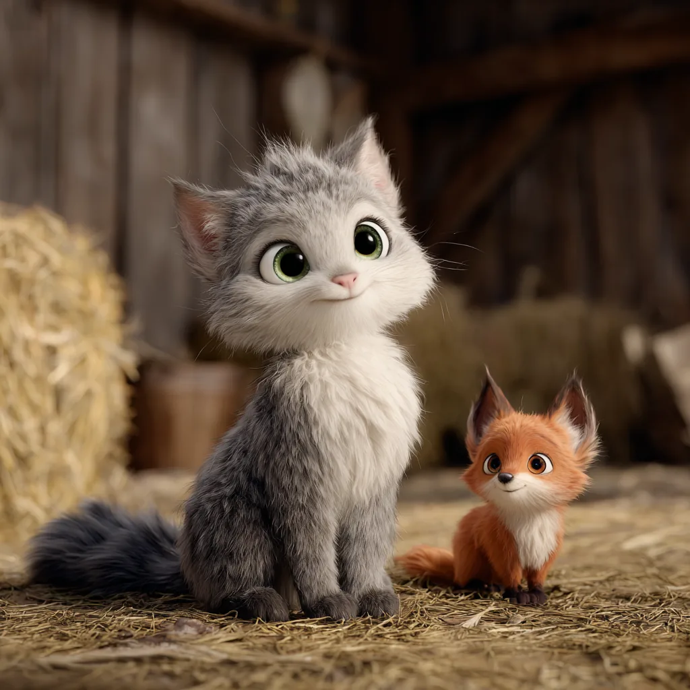

Des histoires plein la tête.
Et aussi plein les oreilles.
Vous avez aimé les lire. Vous allez adorer les écouter !
Les histoires de « Dans ma tête » sont maintenant réunies ici. Retrouvez-nous à partir du 3 novembre 2026, puis toutes les 4 semaines le mardi pour de nouveaux épisodes.

♫ Podcast disponibleDes personnages attachants, un brin de malice et de jolies valeurs à transmettre. Parce qu'une belle histoire se lit, s'écoute et se partage…
Des aventures qui prennent vie
Retrouvez les personnages de nos histoires. En attendant de les entendre en podcast, vous pouvez déjà lire leurs aventures.
Tendez l'oreille,
la magie est là !
1 épisode déjà disponible pour vos moments en famille. D’autres suivront bientôt.
Les liens directs vers le podcast apparaîtront ici dès sa publication. En attendant, les histoires sont déjà disponibles ici, en lecture intégrale.
« Maman, raconte-nous une histoire de dans ta tête ! »
À l'origine, il y a deux petits garçons, leur maman et des histoires inventées au gré de l'imagination. Des récits peuplés d'animaux attachants, d'aventures rigolotes et de petits messages qui aident à grandir.
Et si, après les mots, on leur prêtait maintenant une voix ?
Lire toute mon histoireIl était une fois... la suite !
Les histoires sont prêtes à être découvertes et partagées en famille, dès aujourd’hui.